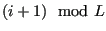

Next: Initialize all Spin Values Up: Case Study 1: The Previous: Headers
dE() is function that accepts as arguments the 2D array of spins, M; the
side-length, L, and a position int. The syntax ** M
means that M is a pointer to a pointer to an int, signifying that M is a 2D array. To access element in row i and column j in M, the syntax is M[i][j]. In C, all array indices start at 0, so M[0][0] refers to the “upper-left” corner of the magnet (assuming row numbers increase going down the magnet).
The inline conditional syntax i?(i-1):(L-1) expands as, “If i is non-zero, return i-1;
otherwise, return L-1.” This
implements periodic boundaries when looking to the west of spin
M[i][j]. The syntax (i+1)\%L returns computes
, which
also implements periodic boundaries when looking to the east of
spin M[i][j].
int dE ( int ** M, int L, int i, int j ) {
return -2*(M[i][j])*(M[i?(i-1):(L-1)][j]+M[(i+1)%L][j]+
M[i][j?(j-1):(L-1)]+M[i][(j+1)%L]);
}